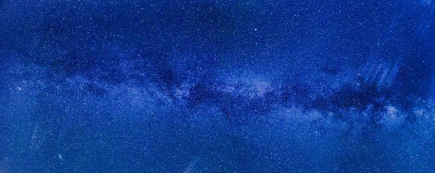

Star Life Cycle
The life cycle of a star spans billions of years. As a general rule,
the more massive the star, the shorter its life span.
Birth takes place inside hydrogen-based dust clouds called nebulae.
Over the course of thousands of years, gravity causes pockets of dense
matter inside the nebula to collapse under their own weight. One of
these contracting masses of gas, known as a protostar, represents a
star’s nascent phase. Because the dust in the nebulae obscures them,
protostars can be difficult for astronomers to detect.
As a protostar gets smaller, it spins faster because of the conservation
of angular momentum—the same principle that causes a spinning ice skater
to accelerate when she pulls in her arms. Increasing pressure creates
rising temperatures, and during this time, a star enters what is known as
the relatively brief T Tauri phase.Millions of years later, when the core
temperature climbs to about 27 million degrees Fahrenheit (15 million degrees
Celsius), nuclear fusion begins, igniting the core and setting off the next—and
longest—stage of a star’s life, known as its main sequence.
Most of the stars in our galaxy, including the sun, are categorized as main
sequence stars. They exist in a stable state of nuclear fusion, converting
hydrogen to helium and radiating x-rays. This process emits an enormous amount
of energy, keeping the star hot and shining brightly.